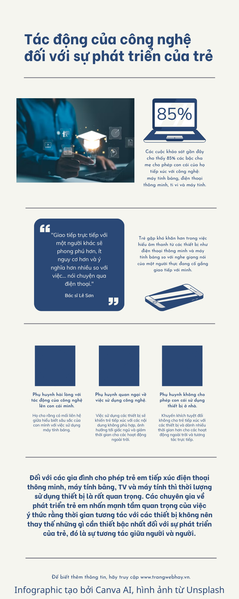

Công nghệ và sự phát triển của trẻ em
Infographic dưới đây khái quát những ảnh hưởng của thiết bị công nghệ đến trẻ và nhấn mạnh vai trò của sự cân bằng giữa thời gian sử dụng thiết bị với tương tác trực tiếp.

Video liên quan
Nếu video không phát, mở video trực tiếp trên YouTube.